Коллекция вещей и игрушек
из архива детского сада
Переступая порог этой страницы, вы оставляете за спиной суету
современного мира. Здесь, в тишине цифровых витрин, время течет иначе
- медленно, бережно, словно боясь разбудить спящие воспоминания.
Перед вами не просто экспонаты. Это хранители детского смеха,
свидетели первых открытий и верные друзья. Их плюшевые бока помнят
тепло маленьких ладоней, а фарфоровые глаза видели самые заветные
мечты.
Советская игрушка- это особый язык. Язык искренности и
простоты. В эпоху, когда мир делился на «важное» и «второстепенное»,
детство оставалось территорией чуда. Здесь рождалось воображение целых
поколений.
«Эти вещи не идеальны. На них есть следы времени:
потертости, сколы, шрамы от игр. Но именно в этих несовершенствах
живет их душа».
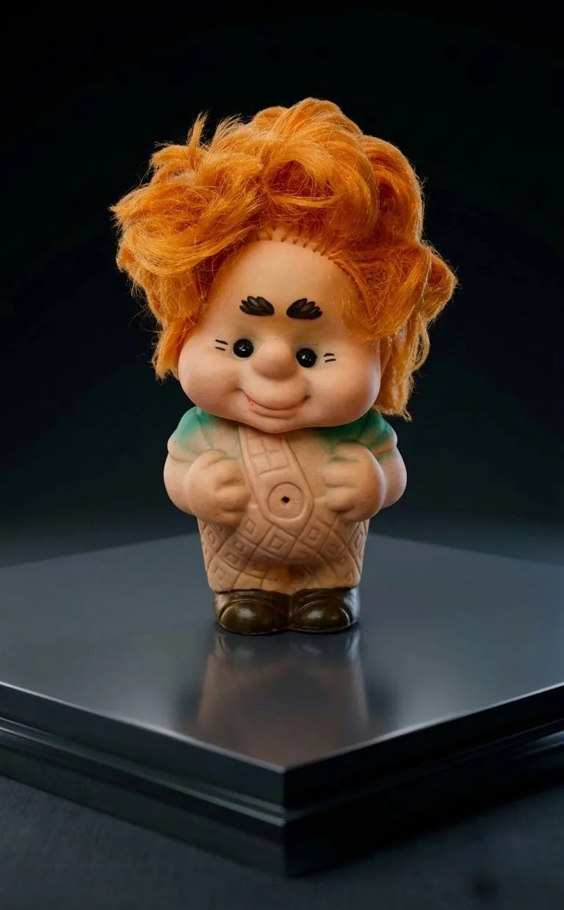
Дата выпуска: 1970-ые годы
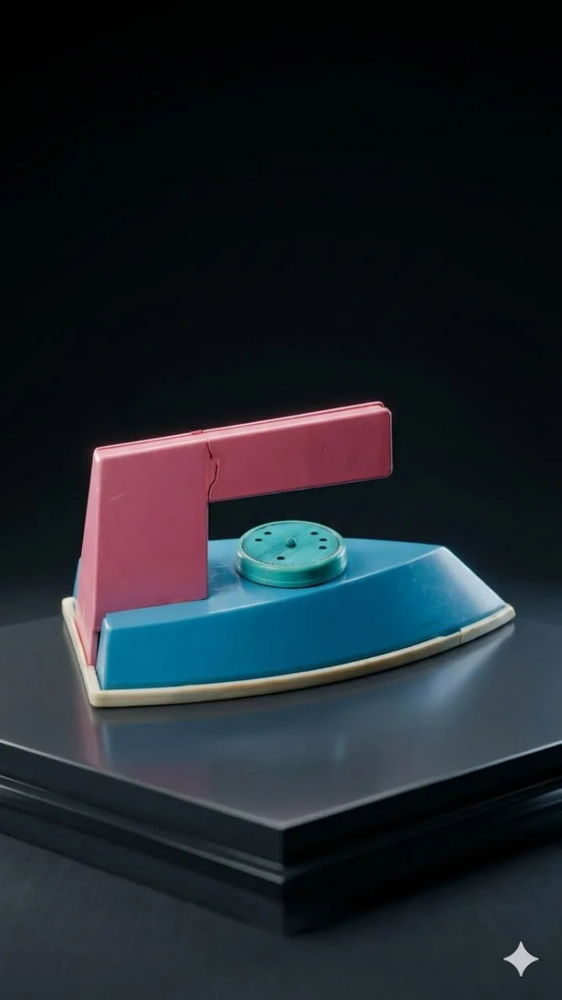
Дата выпуска: 1970-ые годы
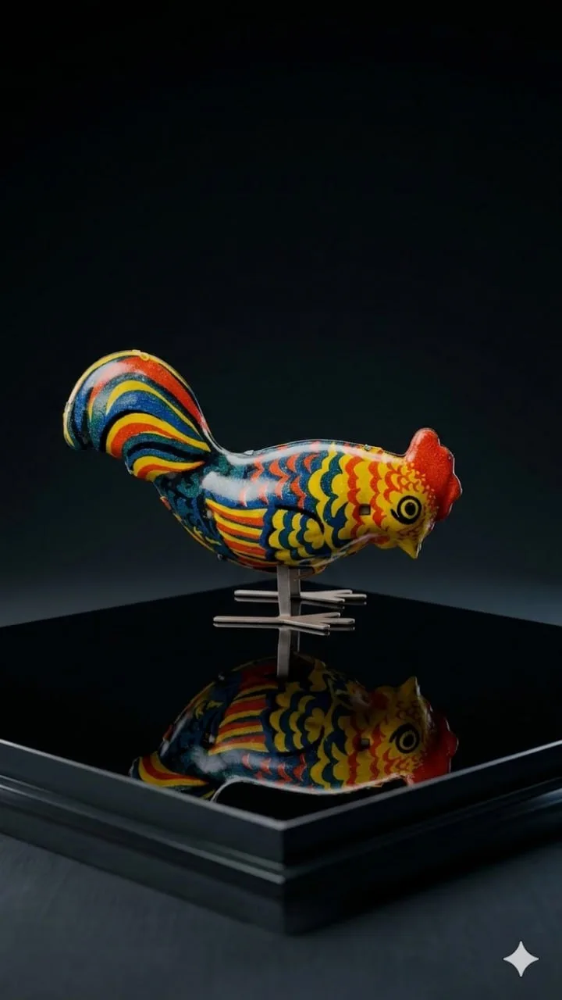
Дата выпуска: 1970-ые - 1980-ые годы
Дата выпуска: 1970-ые - 1980-ые годы
Дата выпуска: 1960-ые годы
Дата выпуска: 1960-ые - 1970-ые годы
Дата выпуска: 1980-е годы
Дата выпуска: 1980-е годы
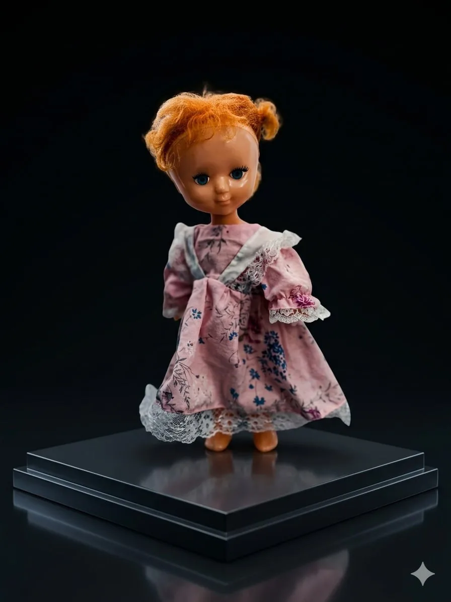
Дата выпуска: 1970-ые - 1980-ые годы
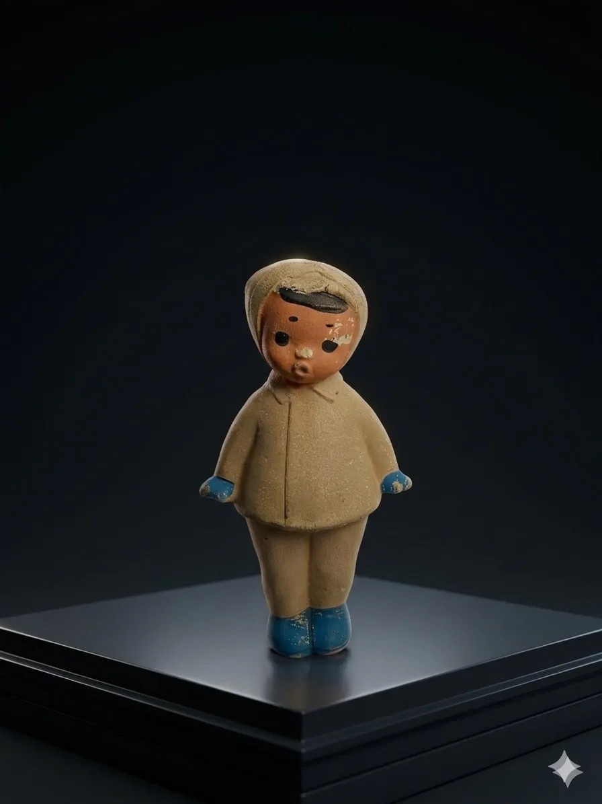
Дата выпуска: 1960 год
Фабрика "Красный треугольник"
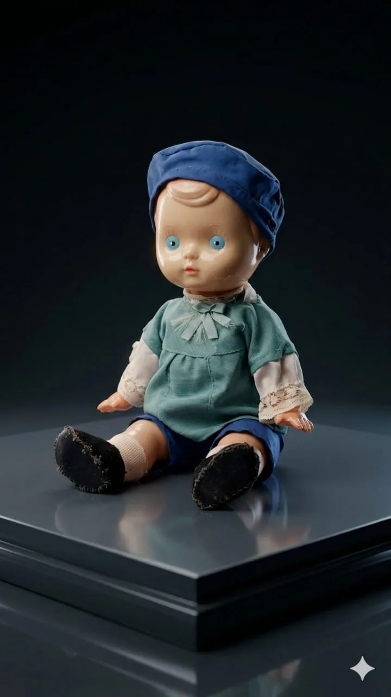
Дата выпуска: 1960-ые годы
Дата выпуска: конец 1960-ых - начало 1970-ых годов
Дата выпуска: 1960-ые - 1970-ые годы
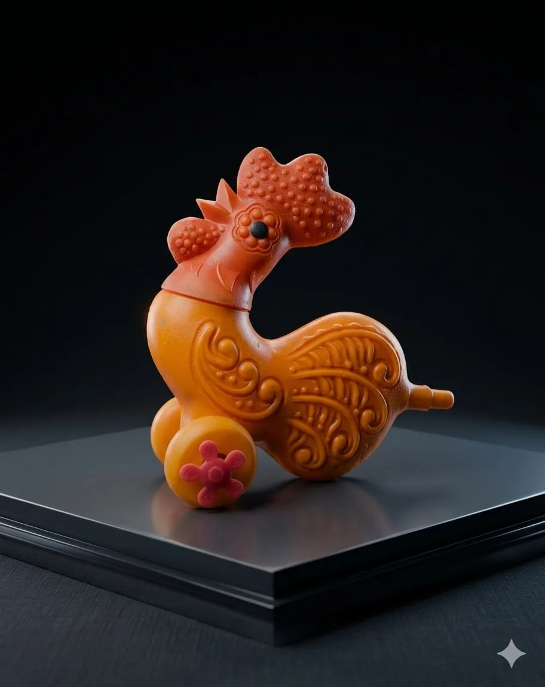
Дата выпуска: 1960-ые - 1970-ые годы
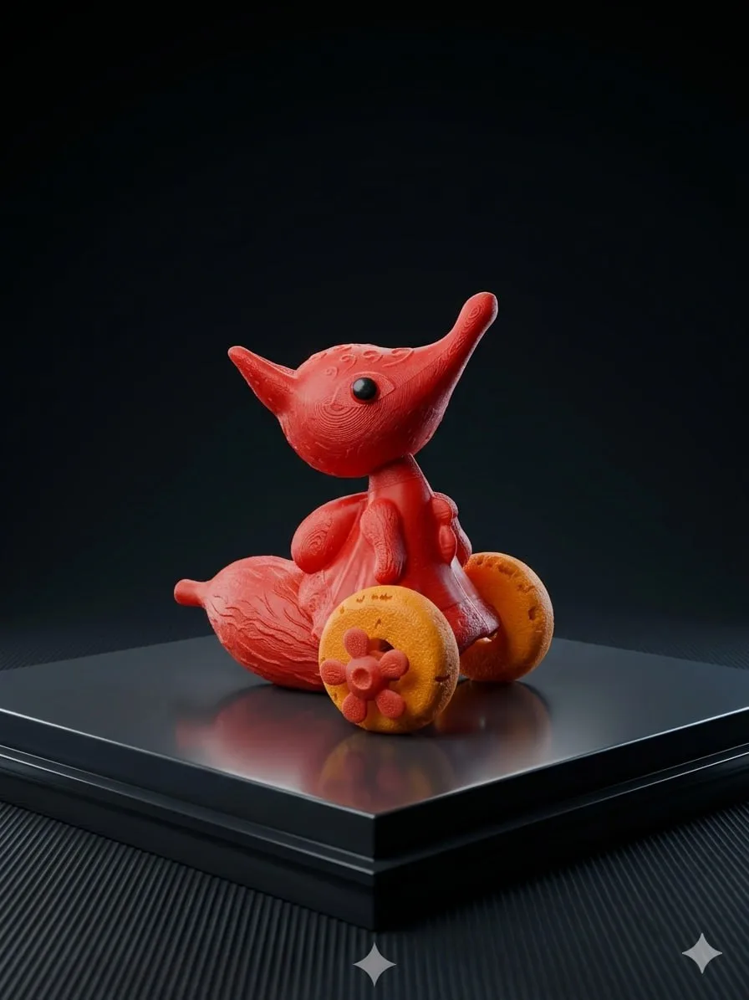
Дата выпуска: 1960-ые годы
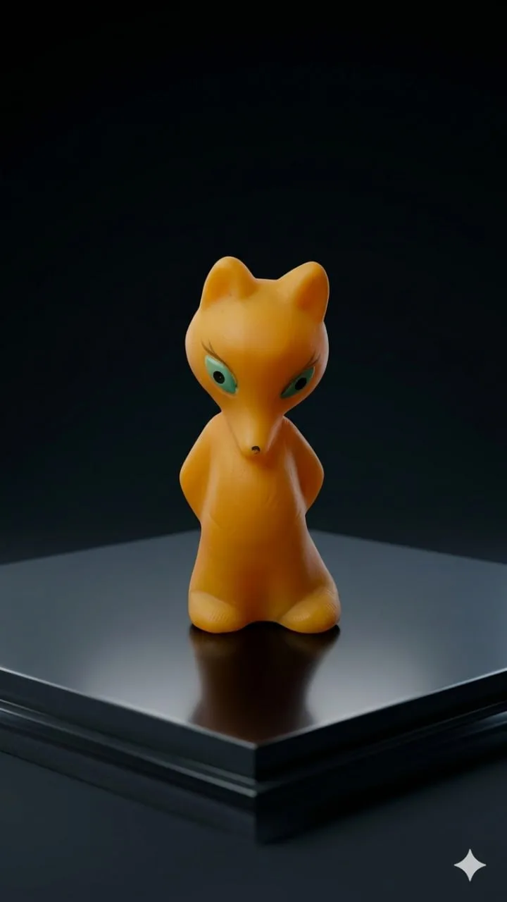
Дата выпуска: 1970-е – 1980-е годы
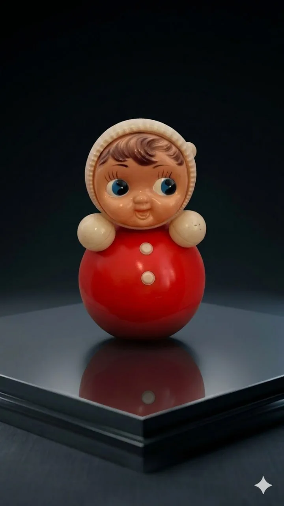
Дата выпуска: 1960-е – 1970-е годы
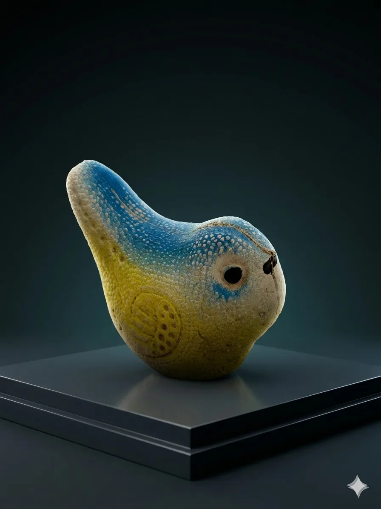
Дата выпуска: 1960-е – 1970-е годы
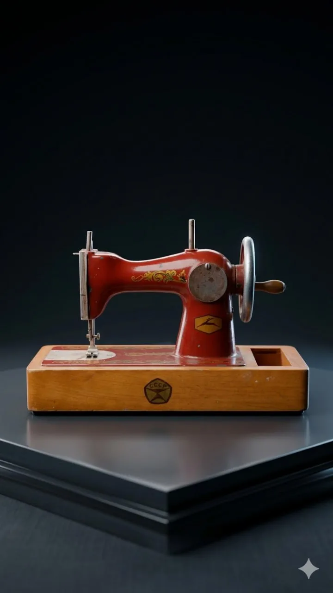